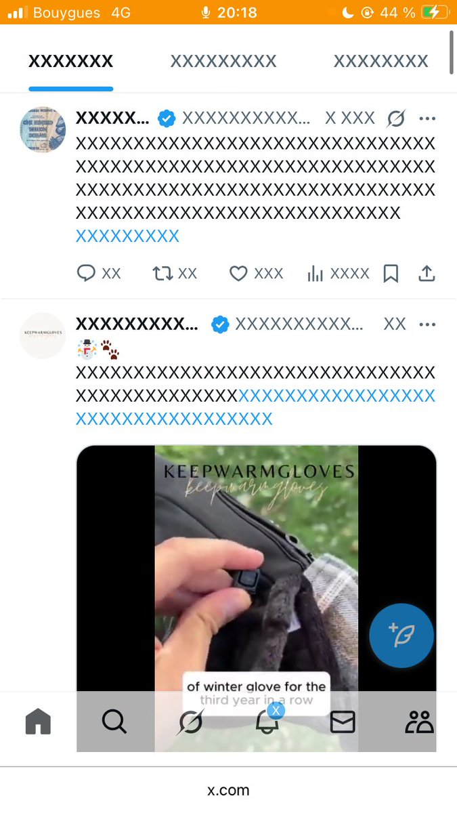
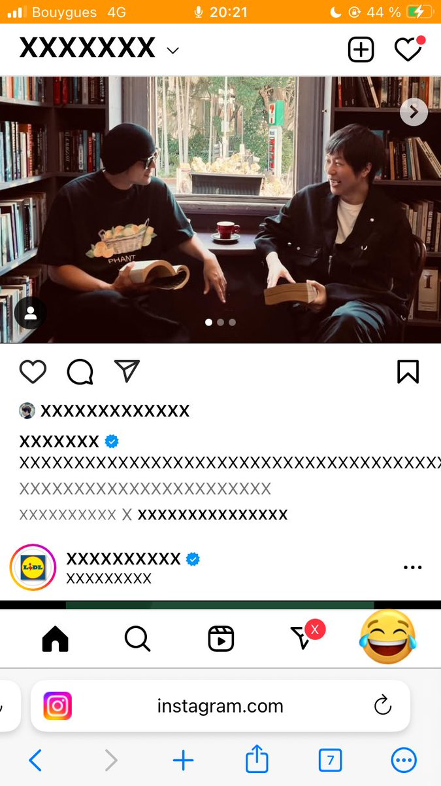
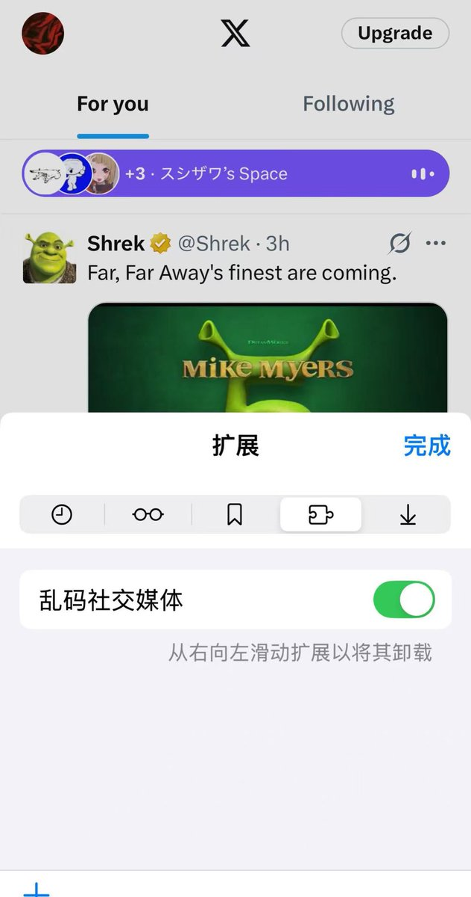
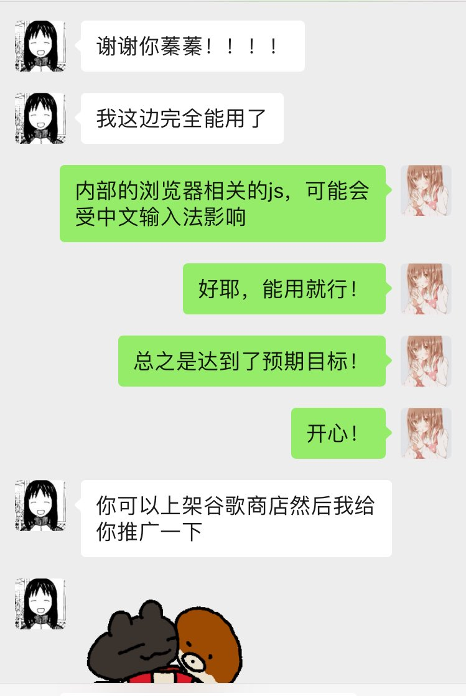

北雁冬翼（simone luxem）🏳️⚧️🏳️🌈🔬
@Simone_Luxem
@garrulous_abyss 盲猜因为adhd，然后文字会分散注意力？




garrulous abyss🌈
@garrulous_abyss
源源是画师。他有一个需求，他手机上既想看画，又不想看任何文字。他说他找了大半天，也没找到chrome插件。
源源：“蓁蓁你知不知道谁能帮我写个这种工具”
我：“我从来没写过，但我应该能写，那样的话，你请我吃顿饭就成”
源源同意了，然后我今天半下午写好测试好了。感觉除了源源，其他人也没这需求 https://t.co/X0ZMCu99g8